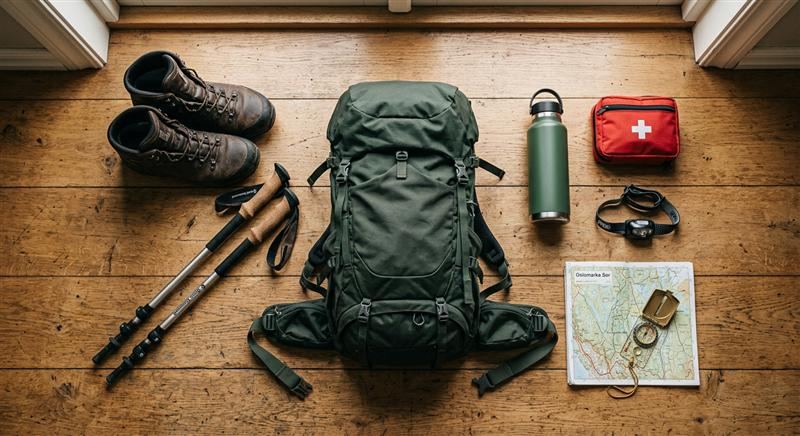

新手必備登山裝備清單：第一次上山該準備什麼

從鞋子到背包，整理出新手最容易忽略、卻最重要的裝備清單，避免第一次上山就吃苦頭。
第一次上山最容易犯的錯，往往不是體力不夠，而是裝備沒準備好。以下是新手最該優先入手的幾樣裝備，按重要程度排列。
核心三大件
- 登山鞋：一雙合腳、包覆性好的登山鞋能大幅降低扭傷與起水泡的機率。購買前務必試穿並確認腳趾在下坡時不會頂到鞋頭。
- 背包：依行程天數選擇合適容量，單日行程 20-30 公升就足夠，搭配腰帶分散重量，長時間背負才不會腰痠背痛。
- 登山杖：上坡省力、下坡保護膝蓋，尤其對負重較重或膝關節較弱的人非常有幫助。
容易被忽略但很重要
- 排汗透氣的中層衣物：棉質 T 恤悶濕之後很難乾，建議選擇快乾材質，並採用洋蔥式穿法方便隨溫度增減。
- 輕量雨衣：山區天氣多變，一件輕量防水外套是保命裝備，絕不能省略。
- 頭燈：即使是計畫當天下山的行程，也要準備頭燈以防摸黑或天候延誤。
- 保暖中層：羽絨或化纖保暖衣，在山頂或休息時能快速維持體溫。
隨身安全裝備
- 足量的水與行動糧（建議比預估多帶 20%）
- 基本醫藥包（透氣膠帶、消炎藥、個人常備藥）
- 離線地圖 App 與行動電源
- 哨子，緊急狀況下用於求救示意
不需要一次買齊最貴的裝備，可以先從租借或借用開始，確認自己喜歡登山這項活動後，再依照常走的路線類型逐步添購適合的裝備。裝備合不合用，往往比價格高低更重要。